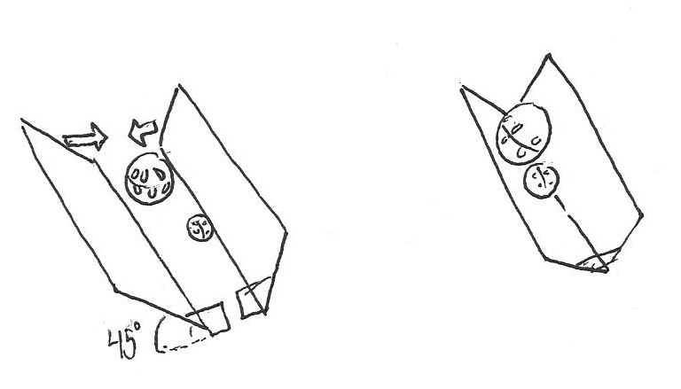
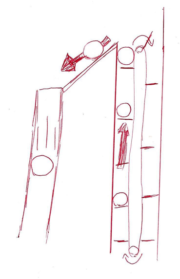

First meet of the season.
We brainstormed ideas for retrieving the golf ball and soft ball sized balls while watching the challenge
video. We came up with three starter ideas: a spade/shovel idea that would be flush to the ground and just
scoop up nearby balls, a 45 degree gripper that would pick up the balls without
getting stuck, and a lift that would pick up the balls and lift them directly up. So far the lift is being worked on the most, with an intake that looks like a beater bar
from a vacuum cleaner, but we haven't decided on the actual way we are going to collect the balls.


We also went over the rules and tried to come up with some strategies to make the game really hard for
our opponent without /technically/ breaking any rules. At first we wanted to shove them into our rolling
goals so that we could get the full goal points, but there was another rule that we couldn't force our opponent to
break a rule. "Force" seemed a bit ambiguous though, so we revised this idea
to us surrounding their robot with rolling goals. Hopefully they would knock down our goals and result in
us getting that goal's maximum.
Max had an idea that was mostly just for fun, but in autonomous mode, before a cascade was released, we
would pull over one of the rolling goals and set its opening against the opening in the center field
structure where the balls would come through. This would quickly fill the tallest tube.
Our minds were blown by thinking of everything that would need to be done to position, tip and then
stand up a full tube under autonomous control. But we have to look into it – this could be a strong
advantage. The rules about tipping the tube past horizontal don't apply and the rules about
grabbing the tube might not be a problem if we just support the tube with a straight bar.